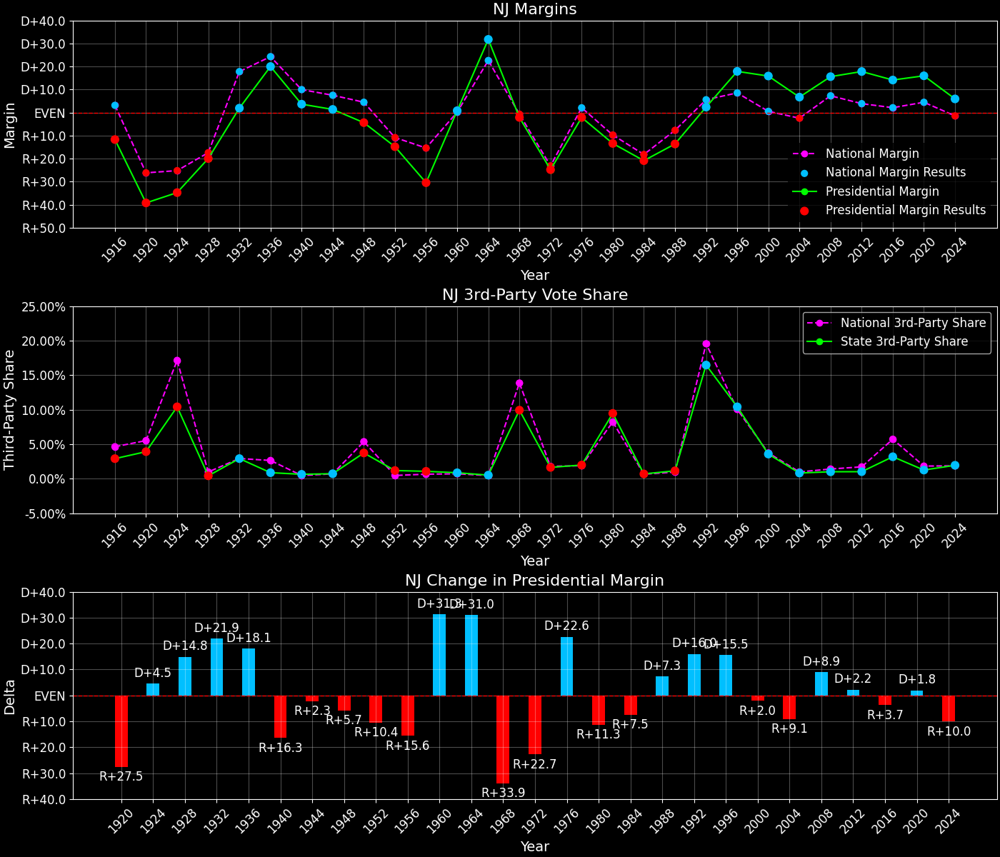

New Jersey (NJ) — Statewide

Margins · 3rd-Party share · Pres. deltas

Relative margins · Relative 3rd-Party · Rel. deltas
New Jersey (NJ) — Total Data
| Year | EVs | D | R | State Margin | Nat. Margin | Rel. Margin | Total votes |
|---|---|---|---|---|---|---|---|
| 1968 | 17 | 1,264,206(44.0%) | 1,325,467(46.1%) | R+2.1 | R+0.7 | R+1.4 | 2,875,395 |
| 1972 | 17 | 1,102,211(36.8%) | 1,845,502(61.6%) | R+24.8(Δ R+22.7) | R+23.1(Δ R+22.4) | R+1.7(Δ R+0.2) | 2,997,229 |
| 1976 | 17 | 1,444,653(47.9%) | 1,509,688(50.1%) | R+2.2(Δ D+22.6) | D+2.1(Δ D+25.2) | R+4.2(Δ R+2.6) | 3,014,472 |
| 1980 | 17 | 1,147,364(38.6%) | 1,546,557(52.0%) | R+13.4(Δ R+11.3) | R+9.7(Δ R+11.8) | R+3.7(Δ D+0.5) | 2,975,684 |
| 1984 | 16 | 1,261,323(39.2%) | 1,933,630(60.1%) | R+20.9(Δ R+7.5) | R+18.2(Δ R+8.5) | R+2.7(Δ D+1.0) | 3,217,862 |
| 1988 | 16 | 1,320,352(42.6%) | 1,743,192(56.2%) | R+13.6(Δ D+7.3) | R+7.7(Δ D+10.5) | R+5.9(Δ R+3.2) | 3,099,553 |
| 1992 | 15 | 1,436,206(43.0%) | 1,356,865(40.6%) | D+2.4(Δ D+16.0) | D+5.6(Δ D+13.3) | R+3.2(Δ D+2.7) | 3,343,594 |
| 1996 | 15 | 1,652,329(53.7%) | 1,103,078(35.9%) | D+17.9(Δ D+15.5) | D+8.5(Δ D+3.0) | D+9.3(Δ D+12.5) | 3,075,807 |
| 2000 | 15 | 1,788,850(56.1%) | 1,284,173(40.3%) | D+15.8(Δ R+2.0) | D+0.5(Δ R+8.0) | D+15.3(Δ D+6.0) | 3,187,226 |
| 2004 | 15 | 1,911,430(52.9%) | 1,670,003(46.2%) | D+6.7(Δ R+9.1) | R+2.5(Δ R+3.0) | D+9.1(Δ R+6.2) | 3,611,691 |
| 2008 | 15 | 2,215,422(57.3%) | 1,613,207(41.7%) | D+15.6(Δ D+8.9) | D+7.3(Δ D+9.7) | D+8.3(Δ R+0.9) | 3,868,237 |
| 2012 | 14 | 2,125,101(58.4%) | 1,477,568(40.6%) | D+17.8(Δ D+2.2) | D+3.9(Δ R+3.4) | D+13.9(Δ D+5.6) | 3,640,292 |
| 2016 | 14 | 2,148,278(55.5%) | 1,601,933(41.4%) | D+14.1(Δ R+3.7) | D+2.1(Δ R+1.8) | D+12.0(Δ R+1.9) | 3,874,046 |
| 2020 | 14 | 2,608,400(57.3%) | 1,883,313(41.4%) | D+15.9(Δ D+1.8) | D+4.5(Δ D+2.4) | D+11.5(Δ R+0.5) | 4,549,457 |
| 2024 | 14 | 2,220,713(52.0%) | 1,968,215(46.1%) | D+5.9(Δ R+10.0) | R+1.5(Δ R+5.9) | D+7.4(Δ R+4.1) | 4,272,725 |
Column explanations
- Δ
- Change (delta) in the value from the previous election year.
- Year
- Election year.
- EVs
- Number of electoral votes allocated to this state or unit.
- D
- Number of votes for the Democratic candidate (raw count(pct%)).
- R
- Number of votes for the Republican candidate (raw count(pct%)).
- State Margin
- Margin between the two major-party candidates, including third-party votes ((D - R)/total).
- Nat. Margin
- The national presidential margin for that year, including third-party votes ((D_total - R_total)/total_votes).
- Rel. Margin
- The presidential margin relative to the national presidential margin (Margin - Nat. Margin).
- Total votes
- Total voter turnout or ballots cast (when provided).
New Jersey (NJ) — Third-Party Data
| Year | D | R | Other votes | State 3rd-Party Share | 3rd-Party Nat. Share | 3rd-Party Rel. Share |
|---|---|---|---|---|---|---|
| 1968 | 1,264,206(44.0%) | 1,325,467(46.1%) | 285,722(9.9%) | 9.94% | 13.86% | -3.92% |
| 1972 | 1,102,211(36.8%) | 1,845,502(61.6%) | 49,516(1.7%) | 1.65% | 1.80% | -0.15% |
| 1976 | 1,444,653(47.9%) | 1,509,688(50.1%) | 60,131(2.0%) | 1.99% | 1.90% | 0.09% |
| 1980 | 1,147,364(38.6%) | 1,546,557(52.0%) | 281,763(9.5%) | 9.47% | 8.24% | 1.23% |
| 1984 | 1,261,323(39.2%) | 1,933,630(60.1%) | 22,909(0.7%) | 0.71% | 0.67% | 0.04% |
| 1988 | 1,320,352(42.6%) | 1,743,192(56.2%) | 36,009(1.2%) | 1.16% | 0.98% | 0.18% |
| 1992 | 1,436,206(43.0%) | 1,356,865(40.6%) | 550,523(16.5%) | 16.47% | 19.55% | -3.08% |
| 1996 | 1,652,329(53.7%) | 1,103,078(35.9%) | 320,400(10.4%) | 10.42% | 10.05% | 0.37% |
| 2000 | 1,788,850(56.1%) | 1,284,173(40.3%) | 114,203(3.6%) | 3.58% | 3.75% | -0.16% |
| 2004 | 1,911,430(52.9%) | 1,670,003(46.2%) | 30,258(0.8%) | 0.84% | 1.00% | -0.16% |
| 2008 | 2,215,422(57.3%) | 1,613,207(41.7%) | 39,608(1.0%) | 1.02% | 1.42% | -0.40% |
| 2012 | 2,125,101(58.4%) | 1,477,568(40.6%) | 37,623(1.0%) | 1.03% | 1.73% | -0.70% |
| 2016 | 2,148,278(55.5%) | 1,601,933(41.4%) | 123,835(3.2%) | 3.20% | 5.73% | -2.53% |
| 2020 | 2,608,400(57.3%) | 1,883,313(41.4%) | 57,744(1.3%) | 1.27% | 1.84% | -0.58% |
| 2024 | 2,220,713(52.0%) | 1,968,215(46.1%) | 83,797(2.0%) | 1.96% | 1.88% | 0.08% |
Column explanations
- Year
- Election year.
- D
- Number of votes for the Democratic candidate (raw count(pct%)).
- R
- Number of votes for the Republican candidate (raw count(pct%)).
- Other votes
- Number of votes for third-party (other) candidates (raw count(pct%)).
- State 3rd-Party Share
- Share of the vote received by third-party (other) candidates.
- 3rd-Party Nat. Share
- The national third-party share for that year (3rd-Party votes / total votes).
- 3rd-Party Rel. Share
- Third-party share relative to the national third-party share (3rd-Party share - Nat. 3rd-Party share).

Two-party margins · relative · deltas
New Jersey (NJ) — Two-Party Data
| Year | EVs | D | R | 2-Party Margin | 2-Party Nat. Margin | 2-Party Rel. Margin |
|---|---|---|---|---|---|---|
| 1968 | 17 | 1,264,206(48.8%) | 1,325,467(51.2%) | R+2.4 | R+0.8 | R+1.6 |
| 1972 | 17 | 1,102,211(37.4%) | 1,845,502(62.6%) | R+25.2(Δ R+22.9) | R+23.6(Δ R+22.8) | R+1.6(Δ R+0.1) |
| 1976 | 17 | 1,444,653(48.9%) | 1,509,688(51.1%) | R+2.2(Δ D+23.0) | D+2.1(Δ D+25.7) | R+4.3(Δ R+2.7) |
| 1980 | 17 | 1,147,364(42.6%) | 1,546,557(57.4%) | R+14.8(Δ R+12.6) | R+10.6(Δ R+12.7) | R+4.2(Δ D+0.1) |
| 1984 | 16 | 1,261,323(39.5%) | 1,933,630(60.5%) | R+21.0(Δ R+6.2) | R+18.3(Δ R+7.7) | R+2.7(Δ D+1.5) |
| 1988 | 16 | 1,320,352(43.1%) | 1,743,192(56.9%) | R+13.8(Δ D+7.2) | R+7.8(Δ D+10.5) | R+6.0(Δ R+3.3) |
| 1992 | 15 | 1,436,206(51.4%) | 1,356,865(48.6%) | D+2.8(Δ D+16.6) | D+6.9(Δ D+14.7) | R+4.1(Δ D+1.9) |
| 1996 | 15 | 1,652,329(60.0%) | 1,103,078(40.0%) | D+19.9(Δ D+17.1) | D+9.5(Δ D+2.6) | D+10.5(Δ D+14.5) |
| 2000 | 15 | 1,788,850(58.2%) | 1,284,173(41.8%) | D+16.4(Δ R+3.5) | D+0.5(Δ R+8.9) | D+15.9(Δ D+5.4) |
| 2004 | 15 | 1,911,430(53.4%) | 1,670,003(46.6%) | D+6.7(Δ R+9.7) | R+2.5(Δ R+3.0) | D+9.2(Δ R+6.7) |
| 2008 | 15 | 2,215,422(57.9%) | 1,613,207(42.1%) | D+15.7(Δ D+9.0) | D+7.4(Δ D+9.9) | D+8.4(Δ R+0.9) |
| 2012 | 14 | 2,125,101(59.0%) | 1,477,568(41.0%) | D+18.0(Δ D+2.2) | D+3.9(Δ R+3.4) | D+14.0(Δ D+5.7) |
| 2016 | 14 | 2,148,278(57.3%) | 1,601,933(42.7%) | D+14.6(Δ R+3.4) | D+2.2(Δ R+1.7) | D+12.3(Δ R+1.7) |
| 2020 | 14 | 2,608,400(58.1%) | 1,883,313(41.9%) | D+16.1(Δ D+1.6) | D+4.5(Δ D+2.3) | D+11.6(Δ R+0.7) |
| 2024 | 14 | 2,220,713(53.0%) | 1,968,215(47.0%) | D+6.0(Δ R+10.1) | R+1.5(Δ R+6.0) | D+7.5(Δ R+4.1) |
Column explanations
- Δ
- Change (delta) in the value from the previous election year.
- Year
- Election year.
- EVs
- Number of electoral votes allocated to this state or unit.
- D
- Number of votes for the Democratic candidate (raw count(pct%)).
- R
- Number of votes for the Republican candidate (raw count(pct%)).
- 2-Party Margin
- Margin between the two major-party candidates, ignoring third-party votes ((D - R)/(D + R)).
- 2-Party Nat. Margin
- The national presidential margin for that year, including third-party votes ((D_total - R_total)/total_votes).
- 2-Party Rel. Margin
- The presidential margin relative to the national presidential margin (Margin - Nat. Margin).